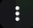
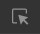

Zamieniasz "www" na "mbasic" lub "d" i klikasz enter
Klikasz na video
Klikasz, w prawym dolnym rogu, na znajdujący się symbol

klikasz Pobierz
Nadal nie ogarniasz? Włącz video poniżej
Kopiujesz link filmiku
Wklejasz go w nowej karcie
zamieniasz "www" na "m" i wciskasz enter
wciśnij F12
W kodzie źródłowym znajdź elementy dotyczące odtwarzacza
● W tym celu, kliknij  znajdującą się w lewym górnym rogu narzędzia dla deweloperów.
● Kliknij na pole z odtwarzaczem.
● Powiniem ci sie zaznaczyć kod strony związany z nim.
Znajdź na zaznaczonym tekście controlslist=nodownload
Usuń nodownload i wciśnij enter
W odtwarzaczu klikasz na
klikasz Pobierz
Nadal nie ogarniasz? Włącz video poniżej
Kopiujesz link filmiku
Wklejasz go w nowej karcie
Zamieniasz "www" na "mbasic" lub "d" i klikasz enter
Szukasz swojego video w komentarzach i klikasz na niego
Klikasz, w prawym dolnym rogu, na znajdujący się symbol